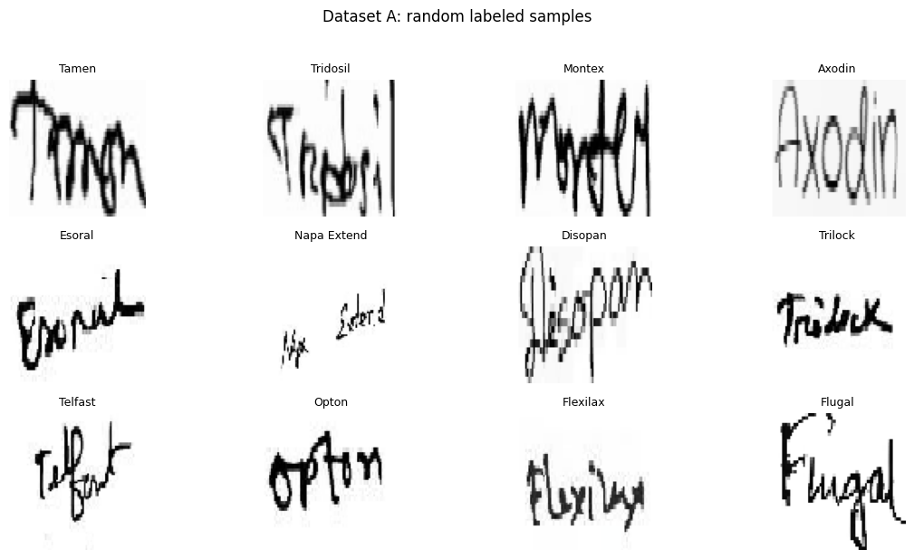

Handwritten Prescription OCR
Two approaches on the same data: a Tesseract OCR + fuzzy-match pipeline, and CNN classifiers (ResNet50, DenseNet121, ElasticNet CNN) over 78 medicine classes.
Headline results
Test split, 780 images, 78 classes (10 per class). Chance level is 1.3% accuracy and 0.50 AUC.
Pipeline
What the notebook does, end to end.
Datasets
Dataset A split
Labeled medicine-name crops (images per split)
Dataset A samples
Random labeled crops from the train split

OCR baseline (Tesseract + fuzzy match)
Handwriting is far outside what Tesseract was trained on, so the matcher rarely finds the right name.
Hit rate vs. chance
Dataset A: exact-label accuracy. Dataset B: any vocabulary medicine found.
Sample OCR output (Dataset B)
Raw text returned for the first two prescriptions, with extracted entities
Model comparison
ResNet50 is the best of the three on every metric, but absolute scores are low for all of them.
Test metrics
Macro AUC (OVR), macro F1 and accuracy on the test split
Validation AUC per epoch
All models still improving at epoch 3 (training was cut at 3 epochs)
Model detail
Loss
Train vs. validation cross-entropy (random guess = ln 78 = 4.36)
Macro F1
Train vs. validation per epoch
Per-class test F1
Confusion matrix (test)
From the notebook run
Findings
Notebook figures
Click any figure to enlarge.